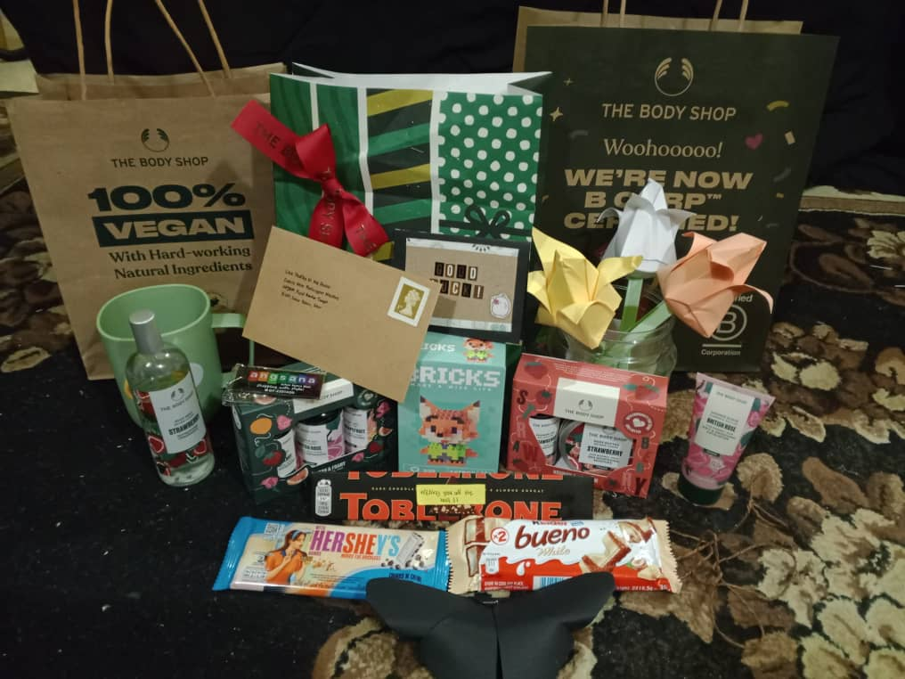

Recently, I completed an intership which was an incredible learning experience.
I completed my internship at UDA Angsana Sdn. Bhd. from 21st July 2024 to 12th September 2024.
This internship provided valuable hands-on experience in Mall Management Office.
🤍successfully completed numerous uncompleted files due to an upcoming audit.
🤍achieved trophy and cash prize at the 2024 Merdeka celebration at Dataran Segamat.
🤍received positive feedback from my supervisor
I possess a range of technical skills, including proficiency in computer operation, social media marketing, and event management. Additionally, I have developed strong soft skills, such as effective communication, problem-solving, and teamwork and collaboration. I excel in time management and organizational skills, ensuring that tasks are completed efficiently and effectively. Furthermore, I am highly adaptable to fast-paced work environments, allowing me to thrive under pressure and quickly adjust to changing circumstances.
My internship at UDA Angsana Sdn. Bhd. was an unforgettable experience that advanced both my career and personal development. I improved my flexibility and problem-solving abilities, acquired knowledge of workplace dynamics, and developed good organizational and communication skills. All things considered, the internship helped me close the gap between my academic understanding and real-world application, giving me the tools I need for career success.
recording taken right after being awarded 2nd place for best
non-government / GLC company at the 2024 Merdeka Celebration at Dataran Segamat.
tasks and duties during my internship
gifts that I received on the last day of my internship
